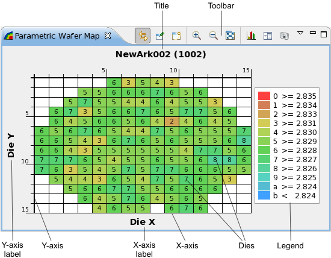

Parametric wafer map view
The parametric wafer map visually displays the measured test values of dies on a wafer. This lets you quickly see whether there is a spatial pattern to parametric test results.
The chart can be based on the maximum, mean, or minimum test values for each die, depending on the preference settings.
A parametric wafer map is opened by choosing from the shortcut menu of a Test summary tab. It can also be opened using the New button (see below) from the toolbar of another parametric wafer map or using the menu command.

These are the elements in the main area of the chart (for the toolbar and shortcut menu, see below):
- Title: By default, the name of the test being displayed and its number in parentheses. You can edit this label in the wafer map properties.
- Toolbar: The action buttons of the chart. See the Toolbar section, below, for details.
- Y-axis label: By default, this label is "Die Y". You can edit this label in the wafer map properties.
- Y-axis: The axis for the y-coordinates of dies on the wafer. You can change the orientation and direction of this axis in the preferences.
- X-axis label: By default, this label is "Die X". You can edit this label in the wafer map properties.
- X-axis: The axis for the x-coordinates of dies on the wafer. You can change the orientation and direction of this axis in the preferences.
- Dies: The individual dies on the wafer.
Each die is marked with a color and a number, both of which indicate the value range within which the test result measured for this die lies. The ranges are listed in the legend.
Hovering the mouse over a die displays the coordinates and test result value for the die in a tooltip.
By default, dies are rectangular to best use the available space in the view. If you prefer square dies, you can specify in the preferences that they always must be square.
- Legend: A description of the colors and alphanumeric codes used in the map. You can configure the display of the legend in the preferences.
Toolbar

The toolbar of a parametric wafer map view includes these buttons:
- Link: Links the display in the view to the selected row in the data navigation view.
In this mode, if the selection in the data navigation view changes, the display updates automatically.
- Pin: Freezes the display in the view.
In this mode, the view keeps displaying the rows it currently displays, even when the selection in the data navigation view changes. Dynamic updating can be resumed by clicking the Link button.
- New: Creates a new parametric wafer map view.
- Zoom In: Enlarges a section of the chart to show more detail.
- Zoom Out: Reduces the scale of the chart to show more data.
- Fit to Screen: If this button is activated, resizing the view automatically resizes the map in the view as well. If the button is deactivated, the map is always the same size, even if the view is made bigger or smaller.
- Statistics: Displays the data that underly the graph.
In addition to information from the columns of the selected row in the Test summary tab, the numbers of dies that fall into each value class are displayed.
Clicking the button again hides the values and displays the map.
- Image: Clicking this button lets you save the current chart display as a PNG or JPEG image.
Shortcut menu
The shortcut menu of a parametric wafer map view contains these commands:
- Class Range: The commands in this submenu adjust the sizes of the
value classes (that is, the range of values that fall into a class):
- Double: Each class is twice the size as before.
- Half: Each class is half the size as before.
- Limits: Adjusts the class sizes so that all classes together cover
the range form the lower limit of the test to the upper limit. (Each class has a range of
(upper limit - lower limit) / number of classes.) - Min/Max: Adjusts the class sizes so that all classes together cover
the range form the lowest test value to the highest test value. (Each class has a range of
(highest value - lowest value) / number of classes.)Note that the test value of a die is either the maximum, the mean, or the minimum of all individual test results of the die. This is set with the Accumulation command (see below) or in the wafer map properties.
- Others: Opens the Classes tab of the wafer map properties, where you can specify custom minimum and maximum values as well as the number of classes.
- Class Count: The commands in this submenu set the number of value
classes used in the chart:
- Double: Doubles the number of classes.
- Half: Halves the number of classes.
- 5: Sets the number of classes to 5.
- 10: Sets the number of classes to 10. This is the default.
- 20: Sets the number of classes to 20.
- Others: Opens the Classes tab of the wafer map properties, where you can specify the number of classes as well as custom minimum and maximum values.
- Accumulation: Specifies which value is used for each die:
- Mean: The value for a die is the mean of its test values.
- Min: The value for a die is the minimum of its test values.
- Max: The value for a die is the maximum of its test values.
- Mark Site: The commands in this submenu lets you mark dies that
belong to a particular site in the wafer map. A die belonging to the specified site is
indicated by a small black rectangle in the upper left corner:
 .
.- Off: No site is marked. This is the default.
- 1 ... 8: The site with the chosen number is marked.
- Others: Opens the Marks tab of the wafer map properties, where you can specify the number of the site to mark. (This lets you, for example, mark sites with a number higher than 8.)
- Restore Defaults: Resets the column settings to their defaults and turns site marks off.
- Properties: Opens the Parametric wafer map properties dialog.
Functional changes
- Introduced in SmarTest 7.2.0
- SmarTest 7.2.2: Added option to export charts as JPEG images